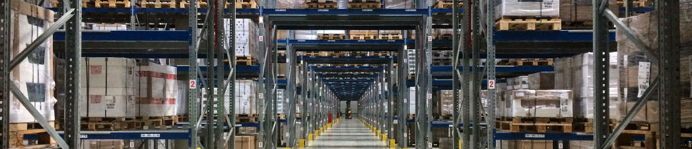

Logistics Products and Services
TUWYN is client-focused, providing quality services by improving processes to reduce costs and increase efficiencies. We transform existing systems into highly agile, reliable systems that deliver logistics on demand. Our processes are based on performance-based support and linked ot modern technologies to modernize business practices.
TUWYN is focused on reducing costs, decreasing acquisition cycle times, and improving contract performance.
- Configuration Management
- Courier Delivery
- Delivery
- Inventory Management
- Mailroom
- Preventive Maintenance
- Printed Circuit Board Assembly
- Process Management
- Product Repair Services
- Reverse Logistics
- Sequencing
- Spare Parts Management
- Technical Refurbishment
- Warehousing
- Warranty Management
Warehousing-Warehouse Management Services (WMS)
Our centralized day-to-day warehouse operations are managed by dedicated teams with one goal, to bring efficiency and innovative technologies to our customers at an affordable price. The centralized management of tasks such as tracking inventory levels and stock locations, allow us to provide WMS systems that are standalone part of GAA Enterprise Resource Planning (ERP) system.
What makes this form of warehouse management systems best for clients? It supersedes the antiquated one site, one storage location functionality. Instead, WMS are comprised of a high-end information logistics system that include tracking and routing technologies with Radio Frequency Identification (RFID) and voice recognition, among others.
No matter how simple or complex the application, the goal of our Warehouse Management Services is to provide holistic logistics solutions for our clients. TUWYN is teamed with specialized companies to provide clients warehousing, loading docks and trucks, for the most comprehensive and holistic warehouse management solutions.

Inventory Management
We focus on processes to optimize and maintain all inventories. The objective of inventory management is to provide uninterrupted delivery in support of the customer-service levels at minimum cost.
TUWYN provides unique courier solutions from ordinaty mail services such as speed, security, tracking, signature, specialization, and individualization of express services, and swift delivery times, which are optional for most everyday mail services. Our courier services specialize in integrating people, policies, processes, efficiencies and optimization, at cost-efficient rates. We operate on all scales, from within military bases and stations to cities, as we provide premium regional services.
We take a preventative maintenance approach to operational equipment solution services which helps restore equipment reliability before worn parts interrupt the flow and earning of a business. The primary goal of preventive maintenance is to mitigate the consequences of failed equipment. This allows us to offer optimized efficiency and reduced repair and replacement costs by preventing the failure before it occurs with planned maintenance and condition based maintenance services. Our care and services provide regular and routine action taken on equipment to prevent its breakdown or malfunction.
TUWYN has a unique understanding of hardware utilization, software patches, technology obsolescence, and unique cyber security software hardware processes and policy integration required to address solutions uptime. This acumen allows us to provide preventative and logistical solutions for maintaining equipment in satisfactory operating condition.
TUWYN's Logistics Service Management and Parts Supply Chain Management Units
are managed by a 3PL and logistics solution team of experts. TUWYN's effective and efficient logistics management solutions are driven by understanding the original equipment manufacturer product performance parameters - the integrated commercial off-the-shelf systems and software, and parts supplied. Product performance is guaranteed by the manufacturer with time-specific warranty cards. Nonperformance of any part or a defect in any part of the product is guaranteed either with a replacement of the part/product, or the repair of the product by the supplier/manufacturer.
Oru Service Software and Parts Management Teams are made up of the service support delivery owners and functions as the primary contact points for our customers, providing essentially managed warranty point. At the first-level Service, support teams are comprised of Customer Desk personnel, who are the first contact point for customers. Technicians and engineers serve as front-end site supporters and second-point contact for out customers.